We are excited that Ext JS 5 is now available! Ext JS 5 introduces many new and exciting improvements to the Sencha Framework. These changes bring about new functionality, usability and style. While adding all of the new features you’re about to see, we’ve tried to minimize changes that would make your upgrade to Ext JS 5 difficult. When breaking changes were made, we also added diagnostic messages, when possible, to explain what changed and what you should do to update your application. For details on these changes, see the Ext JS 5 - Upgrade Guide.
Visit the Ext JS 5 examples page and the Ext JS 5 Documentation page for a deeper look.
Ext JS 5 introduces support for the MVVM architecture as well as improvements on the (C) in MVC. While we encourage you to investigate and take advantage of these improvements, it is important to note that we have made every effort to ensure existing Ext JS 4 MVC applications continue to function unmodified.
Now, let’s take a look at some of these new additions!
Tablet Support & New Themes
One of the most exciting additions to the Ext JS 5 feature set is support for devices with touch-screen input, including tablets and touch-screen laptops. This feature will allow you to get your Ext JS applications up and running on touch-screen devices with minimal modification. That means that you can spend less time thinking about compatibility issues and more time implementing great functionality.
Ext JS 5 welcomes the addition of two new themes: Neptune Touch and Crisp.
The Neptune Touch theme takes the modern and minimalistic look and feel of Neptune and adapts it for use in touch-centric context. This is achieved by increasing the size of some tappable elements to make the theme more touch-friendly.
The Crisp theme takes Neptune Touch and modifies the default colors, icons, etc, while keeping the same touch-friendly dimensions. Both Crisp and Neptune Touch give you an excellent starting point for creating your own custom themes. When building from these themes, you can easily customize sizing and spacing, colors, fonts, icons, borders, etc.
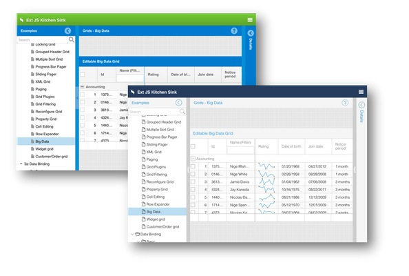
New Application Architectures - Welcome MVVM
Ext JS 4 introduced support for the MVC architectural pattern. With Ext JS 5, we are adding support for a popular alternative to MVC: MVVM (standing for Model-View-ViewModel). One of the big attractions to MVVM is data binding. With data binding, you no longer have to write all of the “glue” code to connect the model layer to the view and update the model when the view is modified.
Data Binding
Components have a new “bind” config that allows them to connect any of their other configs (as long as they have a setter method) to data from Ext.app.ViewModel (see below). Using bind, you can be sure that the appropriate component config will have its setter method called whenever the bound value changes. No custom event handlers needed.
The bind config also allows for two-way data binding, which translates to live synchronization of data between the view and the model. Any data change made in the view is automatically written back, automatically updating any other components that may be bound to that same data.
View Controllers
In Ext JS 4, controllers provided a global solution allowing you to apply logic application-wide. Ext JS 5 offers you a view-specific controller that can be associated directly with a view instance. From instantiation to destruction, Ext.app.ViewController is tied to the component that referenced it. A second instance of the same view class would get its own ViewController instance.
While global controllers created with the Ext JS 4 MVC architecture operate as usual, creating ViewControllers is often a better fit. In particular, they simplify the wiring up of events and component references, so you worry less about details like state management and preventing memory leaks and can focus on your application.
References and Listeners
One of the biggest advantages of a ViewController is its ability to help large applications connect components and events even when those components might be separated by several layers of containers. For example, a view may have many items nested in various containers like so:
...
items: [{
xtype: 'textfield',
reference: 'someField' // this is new
}],
...
items: [{
xtype: 'button',
text: 'Delete,
listeners: {
click: 'onClickDelete' // also new (no "scope" here)
}
}]With a ViewController, handling the click event while accessing the text field couldn’t be simpler:
Ext.define('App.view.foo.FooController', {
extend: 'Ext.app.ViewController',
onClickDelete: function (deleteButton) {
var someField = this.lookupReference('someField');
Ext.Msg.confirm('Confirm Delete',
'Are you sure you want to delete ' + someField.getValue(),
'onConfirm', this);
},
onConfirm: function (choice) {
// process 'yes' or 'no' answer
}
});Compared to the Component Query style of listeners and refs from Ext JS 4, the streamlined form in the new Ext.app.ViewController makes the connections more obvious. It also makes them safer because these linkages are encapsulated in the ViewController. That is to say, when nesting a view inside another view, the listeners and references on the two views are isolated from each other and only connect to their respective ViewControllers.
ViewModels
Ext.app.ViewModel is a class that manages a data object and allows those interested in this data to bind to it and be notified whenever it changes. The ViewModel, like ViewController is owned by the view that references it. Because ViewModels are associated with a view, they are also able to link to a parent ViewModel owned by ancestor components in the component hierarchy. This allows child views to inherit the data of their parent ViewModel.
Being a class, ViewModel is often extended. Because the primary role of the ViewModel is to provide data for its view, there are two features provided in a derived ViewModel that can greatly simplify this task: “formulas” and “stores”. Derived classes can also add other useful methods to encapsulate operations in their data, but formulas and stores are unique to ViewModels.
Formulas
In addition to holding data and providing binding, Ext.app.ViewModel also offer a convenient way to calculate data from other data called “formulas”. Ext.app.ViewModel-cfg-formulas allow you to encapsulate data dependencies in the ViewModel and keep your views free to focus on declaring their structure. This is similar to how the convert configuration works for fields of a traditional data model.
Stores
A ViewModel can also define stores which are then presented to their view as a named object to which they can bind. As with formulas, this allows views to remain free to declare their structure and not become cluttered with complex store definitions and at the same time ensure that they have their own store instances.
Example
A view might have this:
xtype: 'grid',
bind: {
title: 'Summary for {fullName}',
store: '{summary}'
}A simple ViewModel behind that view might look like this:
Ext.define('App.view.summary.SummaryModel', {
extend: 'Ext.app.ViewModel',
formulas: {
fullName: function (get) {
return get('firstName') + ' ' + get('lastName');
}
},
stores: {
summary: {
source: 'allSummaries', // chains to a global store
filters: [{
property: 'fullName',
value: '{fullName}'
}]
}
}
});The above example also shows how stores can be “chained” to other stores and apply their own filters (also sorters). Read on for more details on chained stores, but as you can see there is more going on here. This is because the ViewModel goes one extra step and processes the store configs as bindings which means they react to dynamic values like the filter above.
Bringing It Together
With Ext JS 5, you can improve an existing MVC architecture using ViewControllers to simplify the connection with your Views.
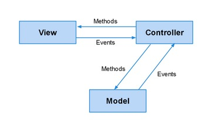
You can also use ViewModels to automate the connection between your Views and your data as well as provide methods to manipulate that data (sometimes called “commands” in MVVM).
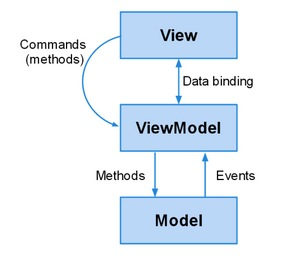
Finally, because Ext JS 5 supports both paradigms, you can use them together.
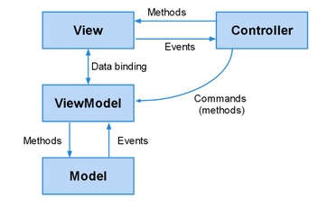
This can be very helpful in maintaining a clear separation of concerns, especially in cases where events trigger new views to be created, routing actions to occur or other activity that would make either the View or the ViewModel concerned with things they would rather ignore.
Routing
We have also implemented routing for Ext JS 5, which allows you to implement “deep linking” within your application. This is achieved by translating your application’s URL into controller actions and methods.
For those unfamiliar with routing in Sencha Touch, it allows you to link to a particular state of your application. Ext JS applications, however, can be more complex, so the Ext JS router supports multiple routes in a single URI. Each route’s handling is sandboxed from others, allowing for much more flexible application control.
Route execution can be controlled using a “before” function. This function will fire before the actual routing takes place, so the appropriate validation may occur before an action. This allows you to stop the current route, other queued routes, or continue the route execution after some action, such as an Ajax request returning.
For more information about Routing, please view our Routing Guide.
Responsive Configs
Many visual aspects of Ext JS applications come from component configs. The new data binding system is based on configs and you can also manage configs using a new mechanism called “responsiveConfig”. The responsiveConfig is a set of rules and corresponding config values to apply when the rules are true. For example:
Ext.create({
xtype: 'viewport',
layout: 'border',
items: [{
title: 'Tools',
region: 'north',
plugins: 'responsive',
responsiveConfig: {
tall: {
region: 'north'
},
wide: {
region: 'west'
}
}
}, {
title: 'Center',
region: 'center'
}]
});There are many dynamic variables available to evaluate in responsive rules such as “tall” (if the viewport is taller than it is wide), but also “portrait” and “landscape” as well as “width” and “height” of the viewport. The rules can be arbitrary expressions using these values:
responsiveConfig: {
'width < 600': {
region: 'north'
},
'width >= 600': {
region: 'west'
}
}Since not all components need to respond to dynamic conditions, responsiveConfig is implemented as a mixin as well as a plugin to allow you to add this functionality to the classes or instances that need it.
Data Package Improvements
Common Data
One of the most common requests from users who build applications for desktops and mobile is for Ext JS and Sencha Touch to merge their respective data packages. We have done just that with Ext JS 5 by moving Ext.data to the new Sencha Core package (see below). In this merge, we have also added some exciting improvements to give you the best of both worlds.
Models
Typical applications have many types of models and may easily need to create many thousands of records. In Ext JS 5, we have streamlined the mechanics of record creation and identifier generation to make sure that creating a record from a raw data object is as inexpensive as possible.
The Model constructor no longer extracts fields from the data object it is given but rather adopts it and upgrades it based on the converters and default values from your defined fields. This means that you no longer need to define every field you want to keep on your record. As long as the server sends the data in the desired format, those properties will remain on the record’s data object. These undeclared fields are assumed to be persistent, so changes will be tracked and included in saves back to the server.
Associations
Simplified Annotation
Ext JS 5 simplifies the process of declaring associations by adding a “reference” config to the field definition. The reference config makes it trivial to declare one-to-many and one-to-one associations.
For example:
Ext.define('App.model.Comment', {
fields: [
{ name: 'userId', reference: 'User' }
]
});All of the various options for associations can now be given as options on the reference config. By using a reference on the field that holds the linking value, however, you no longer have to specify this connection separately. Further, you no longer need to declare the two “sides” of this association, as was required with “belongsTo” and “hasMany”.
Many to Many Associations
Ext JS 5 also adds support for Ext.data.schema.ManyToMany. A classic many-to-many scenario would be a forum with Users and Groups. A User may belong to many Groups. And Groups have many Users. Declaring a many-to-many association can be done on either or both of the classes:
Ext.define('App.model.User', {
extend: 'Ext.data.Model',
fields: [{
...
}],
manyToMany: 'Group'
});As with other associations, this is represented by a Store. What makes many-to-many special is that Ext JS maintains the symmetry. For example, when you add the record for Group G to User A’s “groups” store, the record for User A is added to Group G’s “users” store (and the reverse for removal).
Chained Stores
In Ext JS, stores serve two very important and sometimes conflicting purposes. The first is in the data layer where they act as the client’s “system of record” for information received from the server. The second is in the presentation of that information by components such as Grids and DataViews. The challenge in previous versions was how exactly to manage a store that was needed by multiple components, because each of these components might want to apply sorting or filtering to the data it is presenting which would then impact all components sharing that store.
With chained stores in Ext JS 5, you can now automate this synchronization. A chained store is a store with a “source” store that defines the set of records. The chained store can then apply its filters, sorters or grouper to define its own ordering of the records from the source store. As records are added, removed or modified in the source store, the chained store and associated view react accordingly.
Creation of chained stores is further automated by ViewModel, but they can be easily created directly. Because the chained store reuses the records of the source store, you are saving memory as well as server calls.
Data Sessions
When saving records to the server in Ext JS 4 you had to pay careful attention to the order in which you asked these objects to save themselves. You also had to be sure to call save on all of the records and stores you had modified. All of this bookkeeping created many opportunities for failure when trying to reconcile your data.
With Ext JS 5 there is now a class to manage all of these activities: Ext.data.Session. A session tracks records that need to be updated, created or destroyed on the server. It can also order these operations to ensure that newly created records properly reference other newly created records by their new, server-assigned id.
The session does this by ensuring that all references to a particular id for a Model class map to the same record. All association stores that relate to that Model/id share the same record instance. This ensures that edits made to that record are in one place. Unlike the ModelCache in Sencha Touch, however, Ext.data.Session is a class that you can create. This means you can, for example, create a new session for a modal window to isolate it from the rest of the page.
Using sessions, it is now simple to edit records and their associations, then gather all of these updates and commit them to your server. Because the session tracks all of your edits, you can also get all of the changes at once and send them to your server in customized ways.
Heterogeneous Stores and TreeStores
Trees in Ext JS have always been popular, and Ext JS 5 pushes trees to new heights by giving you ways to load trees that have nodes of multiple types. The first and most flexible option is the Ext.data.reader.Reader-cfg-typeProperty config. This property is used to extract the name for the model type from incoming data to create for that node. Because this is a config on the reader it allows any store to mix record types.
Trees have another way to help resolve the record type: the Ext.data.TreeModel-cfg-childType property. This property is on any node of the tree and specifies the type of child nodes to create.
This means that the Model classes at each level of the tree or node-by-node can be of different types, allowing the use of associated, but different data types in your trees.
Custom Field Types
A common challenge with a data model is field validation. Very often this validation is field-specific (for example, an email address). In Ext JS 5 you can now define custom field classes that can validate their values so you won’t have to repeat those rules on all your model classes. For example:
Ext.define('App.fields.Email', {
extend: 'Ext.data.field.String', // inherit converters
alias: 'data.field.email', // now usable as a Field type
validators: 'email'
});
Ext.define('App.model.User', {
extend: 'Ext.data.Model',
fields: [{
name: 'emailAddress', type: 'email'
}]
});This technique can be used to apply any number of field options as a class and then use that class in your Models.
Model Validation Binding
Now that Models as well as fields can perform validation, what is needed is an easy way to use a ViewModel to connect these results to the forms where the values are displayed. To do so we simply add one config to our form:
modelValidation: true,
items: [{
xtype: 'textfield',
bind: '{user.name}'
},{
xtype: 'textfield',
bind: '{user.emailAddress}'
},
...The Ext.Component-cfg-modelValidation config is an inherited property that applies to all child items below that point in the component hierarchy. Input fields respect this option and request an additional binding from their value binding using the new “validation” association. In other words, we could have written the above more directly (and verbosely) without the “modelValidation” option as:
items: [{
xtype: 'textfield',
bind: {
value: '{user.name}',
validation: '{user.validation.name}'
}
},{
xtype: 'textfield',
bind: {
value: '{user.emailAddress}',
validation: '{user.validation.emailAddress}'
}
},
...Event System
The Ext JS 5 event system makes a significant paradigm shift from previous releases by moving away from directly attached DOM listeners to the “delegated” event model first implemented by Sencha Touch. This means that for each type of event (“mousedown”, “touchstart”, etc.) a single listener is attached at the very top of the DOM hierarchy. When a DOM element fires an event, it bubbles all the way to the top before it is handled. The framework then steps in and simulates the expected delivery sequence to those listeners you have added using the framework’s Element API.
While this approach does bring with it some complexity, it bestows a few important advantages. For starters this reduces the number of interactions with the DOM that can, especially on older browsers, be quite expensive. More importantly it enables Gestures.
Gestures
Sencha Touch first introduced the gesture system to provide applications with high-level “events” that are not natively generated by the browser. Things like “tap”, “rotate” and “swipe” for example. In order to provide a proper touch experience for your Ext JS application this support is critical.
With Ext JS and its focus on desktop applications, we have had to take it to another level to enable mouse inputs to be identified as gestures. This mapping means you won’t have to visit all “click” listeners in your application and conditionalize them to respond to “tap” or a “mousedown” to a “touchstart”. In fact in Ext JS 5 this mapping layer extends to events like these and provides the closest possible mapping to what is supplied by the device.
Sencha Charts
With Sencha Touch 2.1 we introduced a new, high performance, touch-optimized charts package. With Ext JS 5 we have enhanced this charts package to work on both Ext JS and Sencha Touch. This brings lots of new capabilities as well as great performance on tablet devices.

The legacy Ext JS 4 charts have been converted into a separate package so you can still use them when upgrading to Ext JS 5 to minimize your conversion effort. The process of updating to the new charts package simply requires switching out the ext-charts package for the new sencha-charts package. Most of the API’s are the same and the few that are not are covered in the Upgrade Guide.
This new charts package brings many new features to Ext JS 5, including:
- Candlestick and OHLC series
- Pan, zoom and crosshair interactions
- Floating axes
- Multiple axes
- SVG and HTML Canvas support
- Better performance
- Greater customization
Our current Ext JS charts will remain in the framework for legacy support at least until Ext JS 5.1. However, they will not gain any of the new features or functionality included with Sencha Charts.
Tab Panels
With Ext JS 4.2 we introduced the ability to put the tab bar on the left or right of your tab panels. With Ext JS 5 you can now control many other aspects of tab panels such as icon alignment and text rotation. You can even configure the tab bar to join the panel header to save space. Combine all that with flexible new Sass mixins that give you easy control over various presentation options and you can create some amazing results:
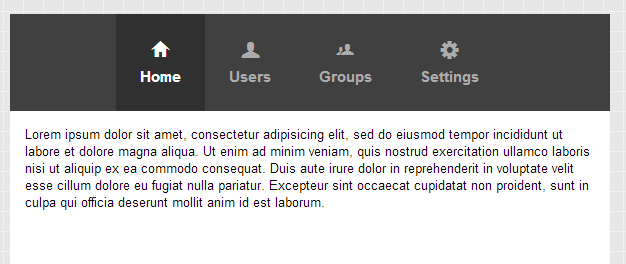
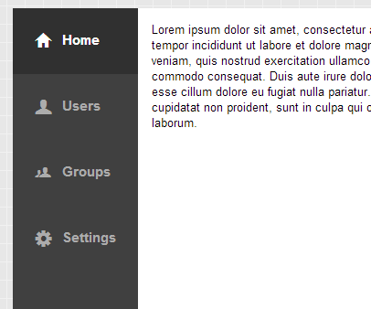
Combine these with “responsiveConfig” controls and you can quickly put together an application like our new Executive Dashboard example.
Grids
Components in Cells
One of the more requested bits of functionality in Ext JS has always been to easily add components to a grid. And now you can with Ext JS 5: say hello to the Widget Column! You can now add a component or widget (see below) config to the new Ext.grid.column.Widget and that item will be treated as a “template” to create one instance for each visible cell in the column. Combine that with the bufferedrenderer plugin and even large grids can render components and widgets without issue.
Buffered Updates
There are some cases in which data updates arrive so quickly that the DOM can be flooded making your app unresponsive. The new support for buffered updates allows you to configure the rate at which updates are reflected in the DOM. These updates will utilize fewer cycles, resulting in a more responsive experience.
Cell Updaters
Renderers are an easy way to create custom markup for a cell. But because renderers can also manipulate many other aspects of the cell such as class names and the like they lead to a lot of inefficiency when it comes to updating those cells.
The new cell updater is an optional method you can provide for a column. This updater operates on the entire cell and is called when the value has changed to make updates to the DOM. This allows you to use your knowledge of the actions taken by the renderer and more efficiently update to the DOM in the cell.
Grid Filters
The very popular “ux” (user extension) that adds filters to your grid’s column menu has been reworked for Ext JS 5 and integrated into the framework as Ext.grid.filters.Filters. The new “gridfilters” plugin uses all the new Ext.data.Store filtering support so its filters are able to be remoted and saved in component state in the same way as all other filters.
Rendering Optimizations
Since grids can never be fast enough, we profiled our newly optimized (for Ext JS 4.2) grid to see where we might make things even faster. What we found was that browser reflow cost could be significantly reduced by separating each grid row into its own, separate table.
This helps buffered rendering more efficiently remove rows from the trailing edge of the scroll. Similarly, adding new rows no longer requires existing rows to reflow. Unless you have extended the rendering pipeline for a grid or heavily styled grid rows, this change will likely go undetected.
Widgets
As a middle ground between full components and renderers/updaters you can chose to encapsulate a cell’s presentation in a Widget. A Widget is a lightweight component that can be easily created at minimal cost. This is because Widgets don’t come with the full lifecycle of a traditional Ext.Component.
The only thing Ext.Widget provides is the necessary machinery to create DOM from an object template and wire events to itself and those elements it creates. All of this is built on the config system exactly like all of the Sencha Touch components. By implementing your custom cell presentation in a Widget, you can not only easily reuse the code in other grids you can also then respond to events like mouse over.
Ext JS 5 ships with several new widgets, two of which (Progress Bar and Slider) are simply lighter weight versions of existing components. The most exciting new widgets however are the sparklines. A sparkline is an ultra-compact chart designed to represent a series of values with minimum real estate which means they can make a grid really come to life!
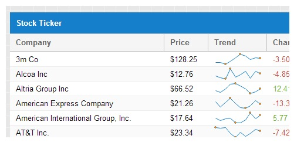
Of course, creating your own widgets is actually quite simple, so the sky’s the limit!
Breadcrumb Bars
When pixels are at a premium, there is now a way to display the contents of a (Ext.data.TreeStore) in a toolbar form factor! The new (Ext.toolbar.Breadcrumb) is demonstrated in the Kitchen Sink:
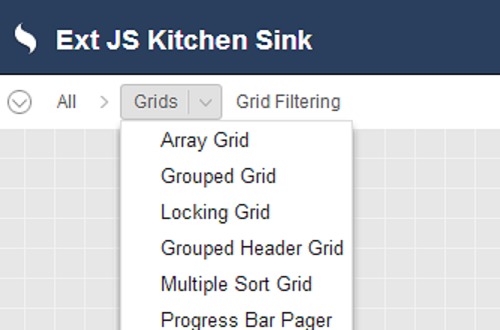
Compared to the alternative (Ext.tree.Panel), the Breadcrumb can be a real space saver for tablets.
Form Package Improvements
Tagfield
The new “tagfield” (Ext.form.field.Tag) removes the hassle of dealing with long and unruly select options. Instead of maintaining their selected state within the picker itself, the selected list is visually maintained in the value display area. From there, selected “tags” can be easily removed, searched for or added.
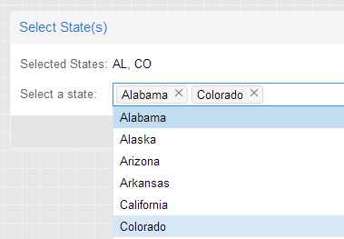
Segmented Buttons
A very common presentation for multiple selection on mobile, now provided by the new (Ext.button.Segmented). Segmented buttons can be horizontal:
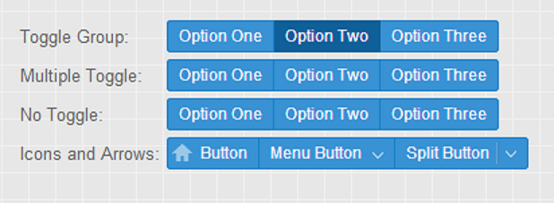
Or vertical:
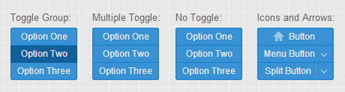
These are full featured (Ext.button.Button) instances so you can use icons, glyphs or even menus - whatever fits your application.
TextField Triggers
Any text field can now be configured with triggers, and those triggers can easily be shown and hidden as needed. Unlike Ext JS 4 where only TriggerField derived classes could have triggers, and those triggers were configured in a very rigid manner, with Ext JS 5 you can add additional triggers to any TextField as simply as this:
Ext.create('Ext.form.field.Text', {
renderTo: Ext.getBody(),
fieldLabel: 'My Custom Field',
triggers: {
foo: {
cls: 'my-foo-trigger',
weight: 1, // controls display order
handler: function() {
console.log('foo trigger clicked');
}
},
bar: {
cls: 'my-bar-trigger',
handler: function() {
console.log('bar trigger clicked');
}
}
}
});The triggers config accepts an object where the keys are simply unique names for your triggers, and the values are configuration objects for the new Ext.form.trigger.Trigger class. This means each trigger conforms to the same API so you can take actions such as show/hide on individual triggers like this:
myField.getTrigger('foo').hide();Further, because Ext.form.trigger.Trigger is a class it can be extended to create even more advanced triggers, such as Ext.form.trigger.Spinner.
Field Layouts
Form fields sport a wide variety of layout options. The demands of IE6 and IE quirks mode made it impossible for form fields to achieve all of their desired layout results using only HTML and CSS. So in Ext JS 4.1 we switched from the more elegant div-based form fields to tables to get as much help from the browser as possible. In the end, however, this still left JavaScript with the need to be deeply involved in the layout of fields, and as a result layout performance suffered.
With Ext JS 5’s minimum supported browser being IE8 in strict mode, we can now realize the dream of div-based form fields purely managed by HTML and CSS! As a result we have refactored the form field rendering and layout process, eliminating all need for JavaScript intervention in the sizing and positioning of a field’s internal elements..
Layout-free Containers
When we combine the new form fields and their “liquid layout” behavior with certain container layouts that do not need to interact with their child items (namely “auto” and “form”), we see some great benefits. This is because the Ext JS 5 layout engine can now completely skip over these components!
Form Layout
The auto container layout has been with Ext JS pretty much forever, but the history of the form layout is an interesting one. In Ext JS 3, form layout was required if you wanted labels. In Ext JS 4.0, form layout was obsoleted by form fields taking ownership of their labels. In Ext JS 4.1 we introduced a new form layout to solve two keys problems while still relying on the fields to manage their own labels:
- Labels should all be the same widths.
- Form fields should be stretched to fit the width of the form (as with “anchor” layout).
At that time, the form layout transformed the form fields’ markup into individual rows and cells in a larger HTML table. Because of these trade-offs we didn’t give much fanfare to the form layout at that time.
With Ext JS 5, however, there is now no need for a table and we can even solve one of the most highly requested use cases in the forms package: automatic label sizing! This means that instead of having to specify a width for the labels, the form layout will simply size the labels to the width of the longest label.
Ext.layout.container.Form will be most appreciated in localized or otherwise dynamic applications where the width of the label’s text is not known in advance. To specify the labelWidth for all items in a form, you configure it on the form layout:
layout: {
type: 'form',
labelWidth: 90
},
items: [{
...When upgrading from previous versions of the form layout, be aware that this is a change in behavior. The labelWidth on items of a form layout is ignored.
Dashboards
In previous releases our Portal example has been a commonly mimicked user experience. Being an example, however, it lacked many of the nuts and bolts you would want for creating real world applications.
The revised Portal is based on the new Ext.dashboard.Dashboard component. This component and its helper classes give you a much better starting point for these style applications. Things like resizable columns, empty column cleanup, column creation via drag/drop and item persistence.
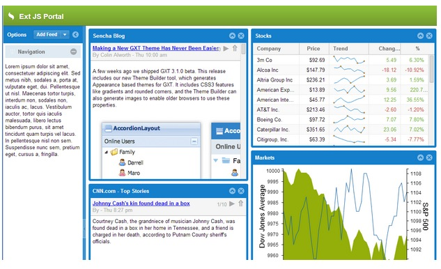
Even if your application is not a dashboard or portal, there is one feature demonstrated above that is likely to be useful in plenty of other contexts: Mashup.
New SASS Mixins
Ext JS 5 adds new SASS “UI” mixins for styling several components that did not have UI mixins in version 4. In past releases these components were only stylable using their global variables (one visual treatment per theme or app). These new mixins enable their components to be styled in multiple ways in a single theme or app.
- Ext.menu.Menu -
extjs-menu-ui() - Ext.form.Labelable -
extjs-label-ui() - Ext.form.FieldSet -
extjs-fieldset-ui() - Ext.form.CheckboxGroup -
extjs-checkboxgroup-ui() - Ext.form.field.Text -
extjs-text-field-ui() - Ext.form.field.Spinner -
extjs-spinner-trigger-ui() - Ext.form.field.Display -
extjs-display-field-ui() - Ext.form.field.Checkbox -
extjs-checkbox-ui()
Multi-select Grid
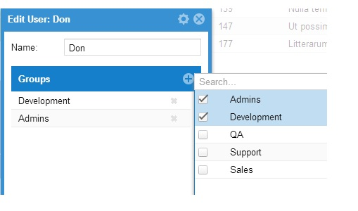
We have also added a new component that is a twist on the old “Multi-Item Selector” example. This new component enables you to easily manage large lists of selected items as well as efficiently search through even larger lists of potential items.
Ext.mixin.Mashup
This mixin adds to its target class a new config property: Ext.ux.google.Api-property-requiredScripts. This property specifies an array of URL’s that Mashup will load for you. Mashup then handles interaction with the class system and loader to ensure that your requiredScripts are loaded prior to your class’s creation callback and application launch.
Portal uses Mashup indirectly via a pair of helper classes. Here are the relevant snippets to give you some ideas of what you could do:
Ext.define('Ext.ux.google.Api', {
mixins: [
'Ext.mixin.Mashup'
],
requiredScripts: [
'http://www.google.com/jsapi'
],
...
});The Ext.ux.google.Api class uses Mashup to provide its own, higher-level property for its derived classes: Ext.ux.google.Feeds-property-requiresGoogle.
Ext.define('Ext.ux.google.Feeds', {
extend: 'Ext.ux.google.Api',
requiresGoogle: { api:'feeds', nocss : true }
});Internally the Google loader is used to process these requests so the Ext.ux.google.Feeds class simply lists the “feeds” module and now the “google.feeds” API is available to all classes that require “Ext.ux.google.Feeds”.
The Sencha Core Package
This package contains the core code that is shared between Ext JS 5 and the next major release of Sencha Touch. This package includes the following pieces:
- Class System
- Data
- Events
- Element
- Utilities
- Feature/Environment Detection
These shared classes allow you to create applications that can share many resources regardless of framework.
Config System
A commonly asked question regarding Ext JS 5 is if it would be switching over to the config system for its classes as did Sencha Touch. The short answer to that question is “somewhat”. The question behind this question, however, is typically: “how do I write cross-framework code when the config system forces divergent syntax?”.
For starters, in Ext JS 5, Component does use the config system for some its configs and calls initConfig in its constructor to set things in motion. This will have implications for custom components that previously called initConfig themselves.
To address the more important questions we have tuned the config system to allow us to incrementally use it without introducing breaking API changes as we do. Without descending into too much detail, the most significant benefit of this is when writing derived classes:
Setting config properties defined by a base class no longer requires those configs to be wrapped in a “config” object.
You still need to use “config: {}” to declare new config properties, but derived classes can now set these directly on their class body. This approach allows derived classes to remain compatible with their base even if the base class switches a config over to use the config system.
The bottom line - classes written for Ext JS 4 where the config system was not used remain compatible with Ext JS 5 even where the config system is now being used.
Compatibility And Upgrading
With Ext JS 5 we have tried to strike a balance between maintaining compatibility (while adding new features and enhancements to existing components and classes) that favors backwards compatibility as much as possible.
To assist with upgrading we have added two class system level mechanisms. Both of these get stripped out of a build by Sencha Cmd (and so are not present in ext-all.js if you are using the pre-built framework).
Compatibility Layer
For those places where changes could break applications we have added a compatibility layer that is integrated right into the framework. By setting one option you can enable the compatibility layer without having to tinker with adding or removing additional scripts.
Turning on the compatibility layer instruments the framework so that it acts more like the previous version while generating diagnostic messages to inform you of calls to deprecated methods or use of deprecated properties (on browsers that can support this).
Private Methods
One of the most common mistakes made when using a robust framework like Ext JS is the accidental hiding of private framework methods. Because in JavaScript all object properties are public, there is no built-in, run-time protection to tell you of these mistakes. Further, even if you have done a 100% perfect job of avoiding collision with private methods, each new release (especially a major release) has the potential to create new collisions with your class methods.
To help make these collisions obvious we have added “privates” to the class system. It is used like so:
Ext.define('Ext.Component', {
...
privates: {
foo: function () {
}
}
});If a derived class overrides this method like so you will receive an error in the console:
Ext.define('MyComponent', {
extend: 'Ext.Component'
...
foo: function () {
}
});If this is intentional, you simple wrap the function in “privates” like Ext.Component.
Getting Started
You can download Sencha Cmd 5 or check out the release notes for known issues below:
Be sure to check out the new Cmd Getting Started guide for the details.
If you are already using Sencha Cmd 5, you can get the latest beta from our downloads page or run:
sencha upgradeInstall Sencha Cmd and restart your terminal.
Additionally, you can generate an Ext JS 5 application by allowing Cmd to automatically download the SDK like so:
sencha generate app -ext MyApp ./app
cd app
sencha app watchOr for an existing application:
cd /path/to/app
sencha app upgrade -ext
sencha app build